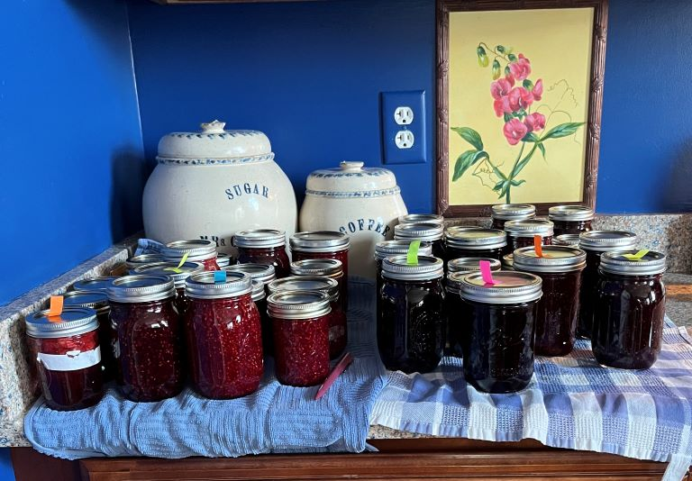

We are incorporating more perennial food plantings into our gardens and our favorites among the possibilities are berries, especially the bramble family.
Sooner rather than later, we will have a very berry hillside.
Currently we grow 3 kinds of Blueberries, fruiting early, mid and late season; 2 kinds of Strawberries, June-bearing and day neutral; 3 varieties of Raspberries; Boysenberries; and thornless Blackberries.
A favorite way to preserve our berries is in jam, and we have master jam maker in house!
